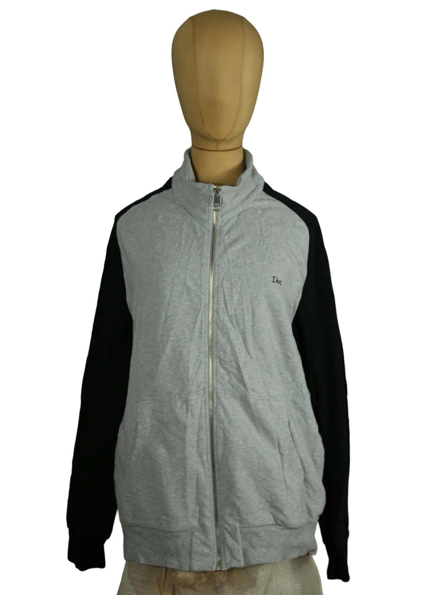

Dior
230.00 €
Aus dem kuratierten Archiv von Disorder119. Diese Dior Zip-Jacke verbindet sportliche Zurückhaltung mit klarer Linienführung. Der graue Korpus steht im Kontrast zu den schwarzen Raglanärmeln und erzeugt eine reduzierte, grafische Silhouette. Der hochschließende Stehkragen und der durchgehende Frontreißverschluss verleihen dem Stück eine funktionale, urbane Präsenz. Das fein gestickte Dior-Logo auf der Brust bleibt bewusst dezent und unterstreicht den zurückhaltenden Luxus. Das Material mit Stretchanteil sorgt für eine weiche, flexible Haptik und angenehme Tragbarkeit. Die elastischen Bündchen und der leicht strukturierte Saum definieren die Form, ohne die Bewegungsfreiheit einzuschränken. Ein vielseitiges Essential zwischen Athleisure und minimalistischer Designerästhetik. Details: Marke: Dior Farbe: Grau / Schwarz Größe: 52 Passform: Regulär Verschluss: Frontreißverschluss Material:
Im Archiv ansehen & in den Warenkorb →